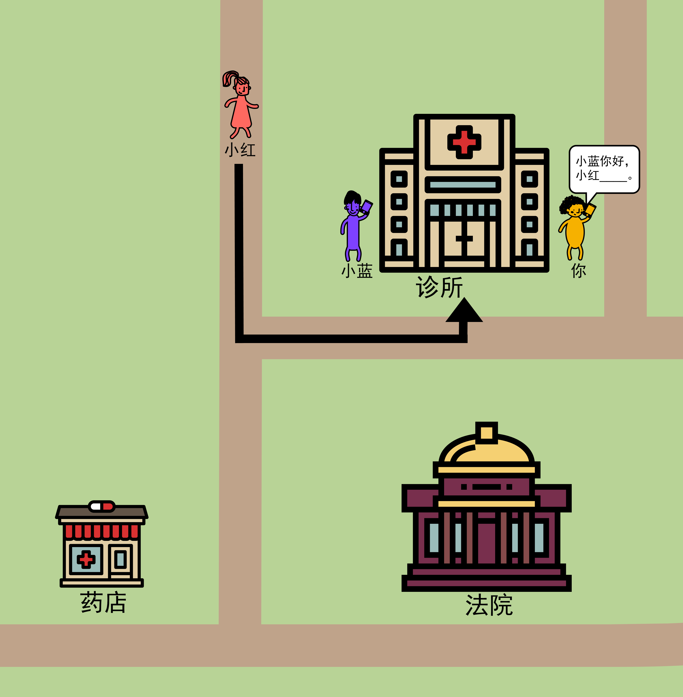
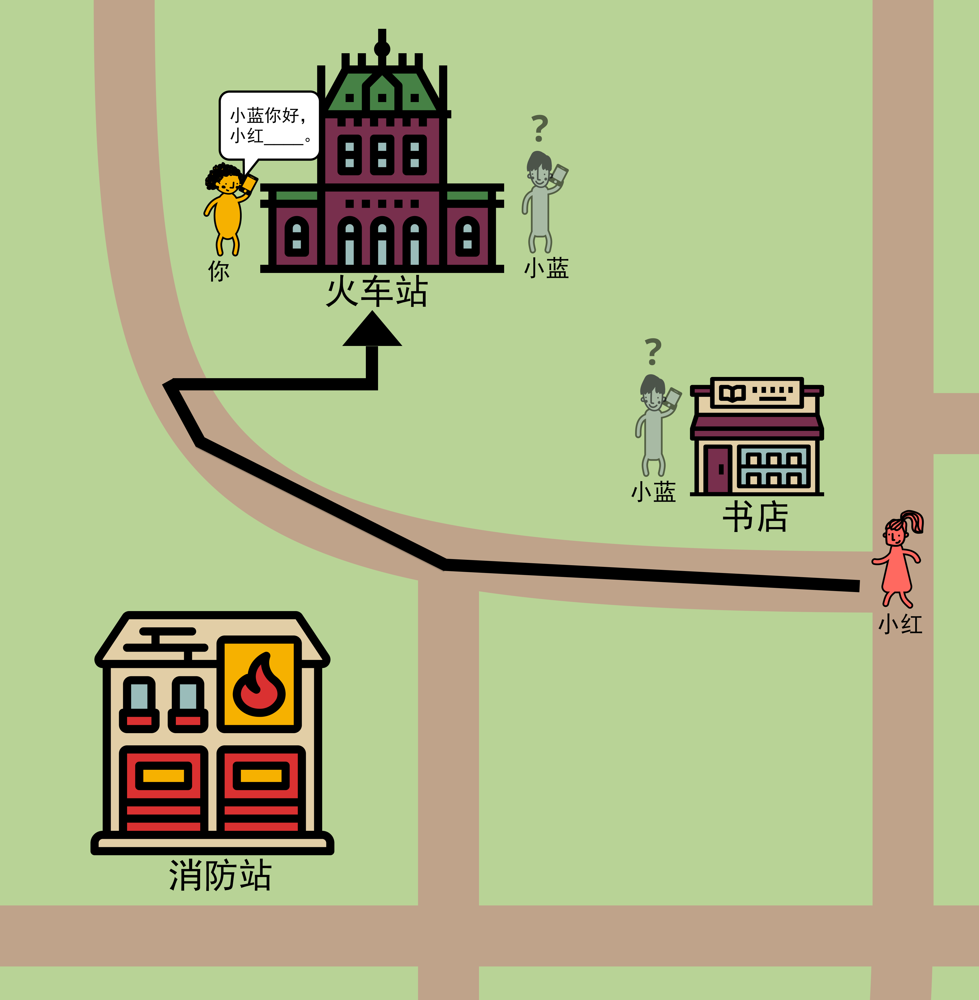

<!DOCTYPE html>
<html lang="en">
<head>
<meta charset="utf-8"/>
	<script src="jspsych.js"></script>
    <script src="jspsych-instructions.js"></script>
  <script src="jspsych-survey-html-form.js"></script>
  <script src="jspsych-html-button-response.js"></script>
  <script src="jspsych-survey-multi-choice.js"></script>
  <script src="jspsych-survey-text.js"></script>
  <script src="https://unpkg.com/@jspsych-contrib/plugin-pipe"></script>
  <link rel="stylesheet" href="css/jspsych.css" />
  <link rel="stylesheet" href="css/styles.css" />
  <title>小红的行程</title>
</head>
<body>

</body>
<script type="text/javascript">
	// retrieve subjectID and sessionID from prolific (URL parameter)
	var query_string = window.location.search;
	var url_params = new URLSearchParams(query_string);
	var subject_id = url_params.get("prolific_pid");
	// var session_id = url_params.get("SESSION_ID");
	var subject_no = url_params.get("subject_no")

	// This is for generating a random filename for DataPipe transmission onto OSF
	const random_file_id = jsPsych.randomization.randomID(10);
	const filename = `${random_file_id}.csv`;

	var conditions = ["s", "l", "b", "n", "sm", "lm", "bm", "nm"];
	var destinations = [
		["firehouse", "trainstation"],
		["hospital", "stadium"],
		["aquarium", "deptstore"],
		["theater", "embassy"],
		["casino", "motel"],
		["clinic", "courthouse"],
		["hotel", "retirement"],
		["childhospital", "shoppingcentre"],
		["icerink", "hardwarestore"],
		["library", "vetclinic"],
		["conventioncenter", "petstore"],
		["amusementpark", "museum"],
		["airport", "communitycenter"],
		["busterminal", "cityhall"],
		["ferryterminal", "planetarium"],
		["artmuseum", "subwaystation"]
	];
	
	// modified latin square of combinations of maps and conditions
	var trial_lists = [];
	for (var i = 0; i < 8; i++) { // make 8 lists
		trial_lists.push([]);
		item = 0;
		for (var m = 0; m < 16; m++) { // there are 16 possible maps
			for (var d = 0; d < 2; d++) { // there are 2 possible destinations
				trial_lists[i].push({"map": m+1, "destination": destinations[m][d], "condition": conditions[(item + i)%8]});
				item++;
			}
		}
	}
	if (subject_no != null){
		// var list_id = (subject_no - 1) % trial_lists.length
		var list_id = 5
		current_list = trial_lists[list_id]
	} else {
		current_list = trial_lists[Math.floor(Math.random() * Math.floor(8))];
	}
	console.log(current_list)
	var timeline = []
	var images = []
	images.push("img/map6-clinic-b.png")
	images.push("img/map1-trainstation-bm.png")
	images.push("img/map7-hotel-nm.png")

	var consent = {
		type: 'survey-html-form',
		preamble: "<div class='instructions'><p>同意书：你正在参加由多伦多大学认知科学家设计的一项研究。这项研究已经多伦多大学研究伦理委员会批准。你必须已年满18岁，并且是自愿参与这项研究。你的参与将会是完全匿名的。研究人员不会获得关于你的任何个人信息。请阅读<a href='Maps_Consent_Form2020.pdf' download='Maps_Consent_Form2020.pdf' target='_blank'>这些额外信息</a>.</p><p>在下方打勾以确认你已下载并阅读同意书，自愿参加实验，并已年满18岁。如果你不同意以上信息，请关闭浏览器窗口。如有疑问，请联系<a href='mailto: psycholinguistics@utoronto.ca'>psycholinguistics@utoronto.ca</a></p></div>",
		html: `<p><input name='response' id='consent-checkbox' type='checkbox' required oninvalid="this.setCustomValidity('请勾选同意')" oninput="this.setCustomValidity('')" >我同意</p>`,
		button_label: "下一步",
		on_finish: function(data) {
			var consent = data["response"]
			if(consent != "on"){
				alert("Sending you back to Prolific...")
				window.location.replace("https://app.prolific.co/");
			}
		}
	}

	timeline.push(consent)

	var introduction = {
		type: 'instructions',
		pages: [
			'<div class="instructions"><p>本实验原本是为儿童设计的。现在我们邀请成年人完成本实验，以比较儿童和成年人之间有何不同。</p><p>你将看到一系列图片。每张图片将会展示一个小镇的一部分地图。你和你的朋友们（小红和小蓝）将会在小镇的各种不同位置打电话。每次，小红都已经告诉了你（黄色的小人）她要去的目的地。你需要在文本框中把句子填写完整，来把这些信息告诉小蓝。</p></div>',
			'<div class="instructions"><p>有些时候，你不确定小蓝在哪里。比如这张图片中，你不知道小蓝是在书店还是跟你一样在火车站（可能他在建筑的另一边所以你看不到他）。在这种情况下，小蓝的人物会以灰色呈现，并标记了一个问号“？”。</p><p>请确保你已理解了这两页实验要求。下一页会有几个问题来测试你有没有理解这些要求。</p></div>'
		],
		show_clickable_nav: true,
		button_label_previous: "上一页",
		button_label_next: "下一页"
	}

	var comprehension = {
		type: 'survey-multi-choice',
		preamble: "<p>我们需要确认你已理解实验要求。请回答下列问题。</p>",
		questions: [
			{prompt:"你的角色是什么样子的？", options: ["蓝/灰色，短直发", "粉色，马尾辫", "黄色，卷发"], required: true, horizontal: true},
			{prompt:"你在和谁说话？", options: ["小蓝", "小红"], required: true, horizontal: true},
			{prompt:"如果小蓝的人物是灰色的并且标记有问号\"?\"，那是什么意思？", options: ["我不知道小蓝在哪里", "小蓝是鬼魂", "小蓝同时在两个地方"], required: true, horizontal: true}
		],
		button_label: "继续"
	}

	var loop_node = {
		timeline: [introduction, comprehension],
		loop_function: function(data) {
			var comprehension_answers = JSON.parse(data.values()[1]["responses"])
			if(comprehension_answers["Q0"] == "黄色，卷发" && comprehension_answers["Q1"] == "小蓝" && comprehension_answers["Q2"] == "我不知道小蓝在哪里"){
				return false;
			} else {
				alert("回答不正确。请再读一遍实验说明。")
				return true;
			}
		}
	}
	
	timeline.push(loop_node)

	// shuffle list
	var shuffledTrials = jsPsych.randomization.repeat(current_list, 1);
	var t = 0;
	// if more than two of the same condition in a row, re-shuffle!
	while (t < shuffledTrials.length - 2) {
		if (shuffledTrials[t]["condition"] == shuffledTrials[t+1]["condition"] && shuffledTrials[t]["condition"] == shuffledTrials[t+2]["condition"]) {
			shuffledTrials = jsPsych.randomization.repeat(current_list, 1);
			t = 0;
		} else {
			t++;
		}
	}
	
	// fill in the trials with the revelant image, and add them to the timeline
	var t = {}
	for (t in shuffledTrials) {
		var trial = {
			type: 'survey-html-form',
			name: shuffledTrials[t]["map"] + "-" + shuffledTrials[t]["destination"] + "-" + shuffledTrials[t]["condition"],
			preamble: '',
			html: `<p> 小蓝你好，小红 <input name="response" type="text" id="textInput" required oninvalid="this.setCustomValidity('请将句子填写完整')" oninput="this.setCustomValidity('')"/>。</p>`,
			button_label: "继续"
		}
		timeline.push(trial)
		images.push('img/map' + shuffledTrials[t]["map"] + '-' + shuffledTrials[t]["destination"] + '-' + shuffledTrials[t]["condition"] + '.png')
	}

	var final_questions = {
		type: 'survey-text',
		questions: [
			{prompt: "你猜测这个实验是关于什么的？", rows: 3, columns: 50}, 
			{prompt: "你有什么其他想反馈的想法吗？", rows: 3, columns: 50}
		],
	};
	timeline.push(final_questions);

	const save_data = {
  		type: jsPsychPipe,
  		action: "save",
  		experiment_id: "9uzk0pO46pRZ",
  		filename: filename,
  		data_string: ()=>jsPsych.data.get().csv()
	};
	timeline.push(save_data)

	// show something at the end!
	var end_screen = {
		type: 'html-button-response',
		stimulus: '感谢您参与实验！',
		choices: ['结束实验'],
		response_ends_trial: true
	}
	timeline.push(end_screen);

	// if not set, pick random ID
	if (subject_id == null || subject_id == "") {
		subject_id = subject_no;
	}

	jsPsych.data.addProperties({
		subject: subject_id,
		list: list_id
	});

	// function saveData(name, data, list_id){
	// 	var xhr = new XMLHttpRequest();
	// 	xhr.open('POST', 'write_data.php'); // 'write_data.php' is the path to the php file described above.
	// 	xhr.setRequestHeader('Content-Type', 'application/json');
	// 	xhr.send(JSON.stringify({filename: name + "_" + list_id, filedata: data}));
	// }

	jsPsych.init({
		timeline: timeline,
		preload_images: images,
		show_preload_progress_bar: false,
    	show_progress_bar: true,
		message_progress_bar: '实验进度',
		on_finish: function() {
		    window.location.replace("https://google.com");
		},
		// on_trial_finish: function(){ saveData(subject_id, jsPsych.data.get().csv(), list_id); }
	});

</script>

</html>